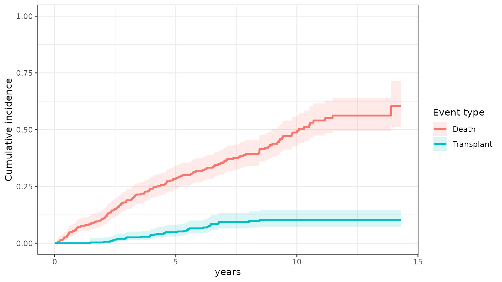
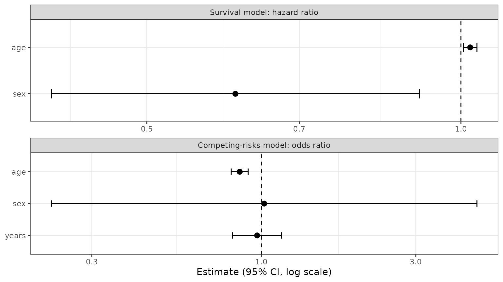
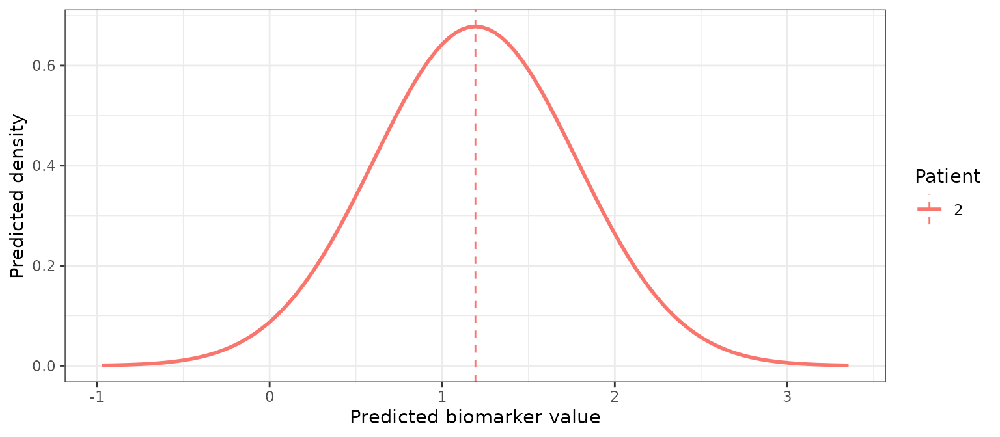
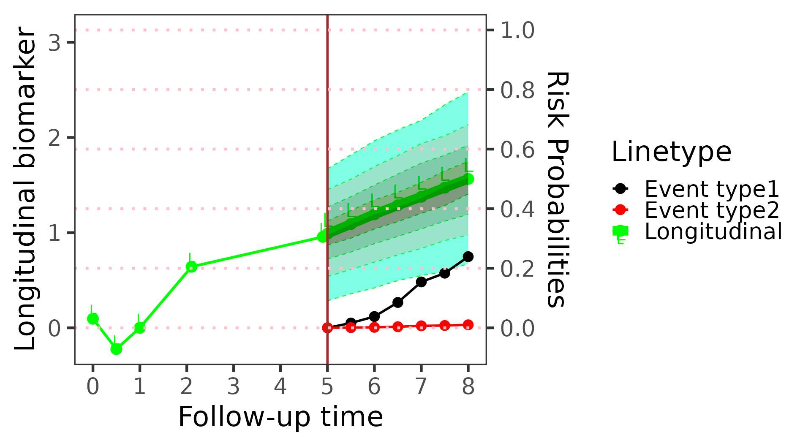
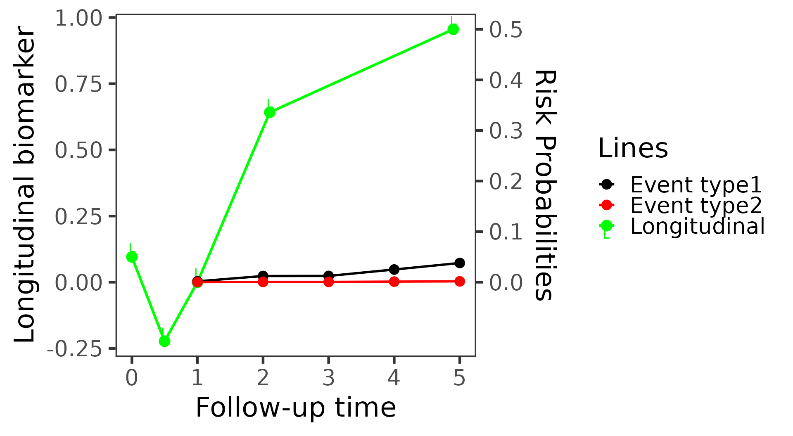
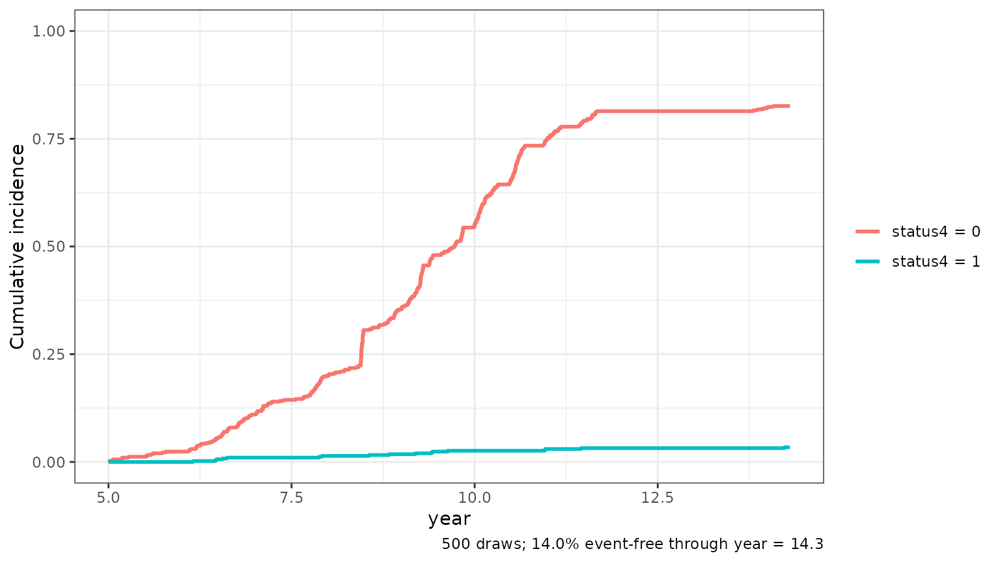

Often a patient can have one of several events, and having one rules
out the others. In pbc3, a patient with primary biliary
cirrhosis can die or receive a liver transplant; once transplanted, the
patient can no longer die of the untreated disease. These are
competing risks. Treating the competing event as censoring
overstates the risk of the event of interest, so BJM models both event
types together and predicts the risk of each.
This article covers every step of an analysis with two competing event types:
| Step | Function | With competing risks |
|---|---|---|
| Look at the data | cifPlot() |
cumulative incidence of each event type |
| Fit | survivalSub() |
adds a model for the event type |
| Fit | longitudinalSub() |
unchanged; the biomarkers may depend on the event type |
| Predict | predictRisk() |
the risk of each event type |
| Predict | predictLongitudinal() |
the biomarker’s future value, given no event of either type |
| Predict |
predictPlot(), riskPlot()
|
both risks in one plot |
| Simulate | simulateTrajectory() |
the event time and type of each simulated future |
| Evaluate |
performancePlot(), calibrationPlot()
|
AUC, Brier score and calibration per event type |
The data
pbc3 has one row per visit. Three columns describe the
outcome, and they are constant within a patient:
-
years: time from registration to the event or to censoring; -
status3: 1 if the patient had an event (death or transplant), 0 if censored; -
status4: the event type, 0 for death and 1 for transplantation, andNAfor a censored patient.
(status5 codes the same information in one column, 0
censored, 1 death and 2 transplant, which is the form
cifPlot() takes.)
first <- pbc3[!duplicated(pbc3$id), ]
table(event = first$status3, type = first$status4, useNA = "ifany")
#> type
#> event 0 1 <NA>
#> 0 0 0 143
#> 1 140 29 0Of the 312 patients, 140 died, 29 were transplanted and 143 were censored. The cumulative incidence of each event type, estimated with the Aalen–Johansen estimator, treats the other event correctly rather than as censoring:
cifPlot(pbc3, survival_variable = "years", event_type_variable = "status5",
event_labels = c("1" = "Death", "2" = "Transplant"))
Step 1: the survival sub-model
The backward joint model writes the joint distribution of the event time and the event type as
a model for when some event happens, and a model for which
event it is given when it happens. survivalSub() fits both,
from one row per patient:
-
form_marginal_surv, a Cox model for the time to the first event of either type (status3); -
form_conditional_cr, a logistic regression for the event type (status4) among the patients who had an event. It must contain the event time (years), as a plain linear term: this is how the chance of each type can change over time.
survival_fit <- survivalSub(
first,
form_marginal_surv = Surv(years, status3) ~ age + sex,
form_conditional_cr = status4 ~ years + age + sex
)
survival_fit
#>
#> Call:
#> survivalSub(form_marginal_surv = Surv(years, status3) ~ age + sex,
#> form_conditional_cr = status4 ~ years + age + sex)
#>
#> Data Descriptives:
#> Number of subjects : 312
#> Number of events : 169
#> Cause-1 events (status4 = 0) : 140
#> Cause-2 events (status4 = 1) : 29
#>
#> =================================================================
#> Marginal Survival Sub-model [Cox PH]
#> -----------------------------------------------------------------
#> Formula: Surv(years, status3) ~ age + sex
#>
#> Coef exp(Coef) SE z p-value
#> age 0.020411 1.020621 0.007584 2.691 0.00712 **
#> sex -0.497707 0.607923 0.207078 -2.403 0.01624 *
#> ---
#> Signif. codes: 0 '***' 0.001 '**' 0.01 '*' 0.05 '.' 0.1 ' ' 1
#>
#> n = 312, events = 169
#> Concordance = 0.570 (se = 0.0226)
#> Likelihood ratio = 14.20 on 2 df, p = 0.0008263
#> Wald test = 15.29 on 2 df, p = 0.0004776
#> Score (logrank) = 15.50 on 2 df, p = 0.0004299
#>
#> =================================================================
#> Conditional Competing-Risks Sub-model [Logistic GLM]
#> -----------------------------------------------------------------
#> Formula: status4 ~ years + age + sex
#>
#> Coef SE z p-value
#> (Intercept) 5.65622 1.70478 3.318 0.000907 ***
#> years -0.02898 0.08919 -0.325 0.745242
#> age -0.15305 0.03076 -4.976 6.5e-07 ***
#> sex 0.02109 0.77150 0.027 0.978192
#> ---
#> Signif. codes: 0 '***' 0.001 '**' 0.01 '*' 0.05 '.' 0.1 ' ' 1
#>
#> Null deviance : 154.94 on 168 df
#> Residual deviance : 115.05 on 165 df
#> AIC : 123.05
#> =================================================================“Cause 1” is the event type coded 0, death, and “cause 2” the type
coded 1, transplantation, the same order the predictions below use. The
event-type model’s coefficients are log odds of transplantation against
death: older patients are much less likely to be transplanted, while the
timing of the event makes little difference (years, p =
0.75).
plot(survival_fit)
Without competing risks, leave form_conditional_cr out
(or set it to NULL): every prediction below then refers to
the single event.
Step 2: the longitudinal sub-models
The biomarker models do not change. As usual, they are fit on the
patients with an event, whose event time is known, and contain the event
time (years) as a covariate:
long_sub_fixed <- list(
"serBilir" = serBilir ~ year + age + sex + years + years:year,
"albumin" = albumin ~ year + age + sex + years + years:year
)
long_sub_random <- list("serBilir" = ~ year | id, "albumin" = ~ year | id)
long_fit <- longitudinalSub(pbc3[pbc3$status3 == 1, ], long_sub_fixed, long_sub_random)A biomarker may also depend on the event type, if its course before a death differs from its course before a transplant. Add the event-type column to the formula:
long_fit_by_type <- longitudinalSub(
pbc3[pbc3$status3 == 1, ],
list(serBilir ~ year + age + sex + years + years:year + status4,
albumin ~ year + age + sex + years + years:year + status4),
long_sub_random
)The event type is unknown for a patient being predicted; the
predictions average over it, so the prediction data does not even need a
status4 column.
Step 3: the risk of each event type with
predictRisk()
As in vignette("BJM-intro"), we predict for patient 2
from their visits up to year 5. The outcome columns are unknown at that
time, so they are set to NA.
patient <- pbc3[pbc3$id == 2 & pbc3$year <= 5, ]
patient$years <- NA
patient$status4 <- NApredictRisk() returns one risk per event type: the
probability that the patient’s first event happens within
horizon years of prediction_time and is of
that type, given that they were event-free at
prediction_time and given their biomarker history.
risk <- predictRisk(list(patient, patient), long_fit, survival_fit,
prediction_time = 5, horizon = 3, time_variable = "year",
survival_variable_all = list(), survival_trans_function = list())
risk
#>
#> =================================================================
#> Dynamic Prediction - Event Risk
#> -----------------------------------------------------------------
#> Competing risks : Yes
#> Subjects : 1
#> -----------------------------------------------------------------
#>
#> Subject Cause 1 Risk Cause 2 Risk Total Risk
#> 2 0.2389 0.0102 0.2491
#>
#> =================================================================-
risk_prob_1is the risk of event type 0 ofstatus4, here death; -
risk_prob_2is the risk of event type 1, here transplantation; - their sum is the risk of an event of either type.
Which event is _1 and which is _2 follows
the coding of the event-type variable: _1 is its value 0
(or its first level, for a factor). Recode it if you want the event of
interest first.
The sum is the risk of an event of either type, which is also what a model without the event-type part predicts. Here the two agree exactly, because the biomarker models do not depend on the event type, so summing over the types just gives back the single-event model:
survival_fit_any <- survivalSub(first, Surv(years, status3) ~ age + sex, NULL)
risk_any <- predictRisk(list(patient, patient), long_fit, survival_fit_any,
prediction_time = 5, horizon = 3, time_variable = "year",
survival_variable_all = list(), survival_trans_function = list())
c(death = unname(risk$risk_prob_1), transplant = unname(risk$risk_prob_2),
sum = unname(risk$risk_prob_1 + risk$risk_prob_2), any_event = unname(risk_any$risk_prob_1))
#> death transplant sum any_event
#> 0.23891424 0.01016395 0.24907819 0.24907819Several patients can be predicted at once; patients who already had
an event before prediction_time are left out.
several <- pbc3[pbc3$id %in% c(2, 4, 5, 9) & pbc3$year <= 3, ]
several$years <- NA
several$status4 <- NA
risk_several <- predictRisk(list(several, several), long_fit, survival_fit,
prediction_time = 3, horizon = 3, time_variable = "year",
survival_variable_all = list(), survival_trans_function = list())
round(data.frame(death = risk_several$risk_prob_1, transplant = risk_several$risk_prob_2), 3)
#> death transplant
#> 2 0.084 0.004
#> 4 0.696 0.041
#> 5 0.326 0.245
#> 9 0.594 0.229The model with type-specific biomarker courses is used the same way. Its risks differ a little, because the history now also says something about which event is coming:
risk_by_type <- predictRisk(list(patient, patient), long_fit_by_type, survival_fit,
prediction_time = 5, horizon = 3, time_variable = "year",
survival_variable_all = list(), survival_trans_function = list())
c(death = unname(risk_by_type$risk_prob_1), transplant = unname(risk_by_type$risk_prob_2))
#> death transplant
#> 0.22569139 0.01561191Step 4: future biomarker values with
predictLongitudinal()
predictLongitudinal() predicts a biomarker’s value at
prediction_time + horizon, for a patient who is still
event-free then. With competing risks this means free of both
events; the prediction averages over the event types (and times) the
patient may have later, weighted by how likely each is.
bilirubin <- predictLongitudinal(bio_i = 1, list(patient, patient), long_fit, survival_fit,
prediction_time = 5, horizon = 1, time_variable = "year",
survival_variable_all = list(), survival_trans_function = list())
bilirubin
#>
#> =================================================================
#> Dynamic Prediction - Future Biomarker
#> -----------------------------------------------------------------
#> Y grid range : [-2.632, 5.093] (201 points)
#> Subjects : 1
#> -----------------------------------------------------------------
#>
#> Subject MAP(Biomarker) Post.Mean Post.SD 2.5% 97.5%
#> 2 1.1925 1.1915 0.5882 0.0332 2.3507
#>
#> MAP = mode of the predictive density (Maximum A Posteriori)
#> Posterior summaries from density grid of 201 points.
#>
#> =================================================================bio_i picks the biomarker (1 is
serBilir); with several, or NULL, all of them
are predicted in one call.
plot(bilirubin)
Step 5: plotting a patient’s risks
predictPlot() fixes the landmark and lets the window
grow: it shows the biomarker history, the predicted future biomarker,
and the risk of each event type as the horizon increases (event type 1
is death, event type 2 transplantation).
predictPlot(list(patient, patient), long_fit, survival_fit,
prediction_time = 5, horizon = seq(0, 3, 0.5), time_variable = "year",
survival_variable_all = list(), survival_trans_function = list())
riskPlot() instead fixes the window, here one year, and
moves the landmark, so each risk uses more of the history:
riskPlot(list(patient, patient), long_fit, survival_fit,
prediction_time = c(1, 2, 3, 4, 5), bio_i = 1, horizon = 1, time_variable = "year",
survival_variable_all = list(), survival_trans_function = list())
Step 6: simulated futures with
simulateTrajectory()
simulateTrajectory() draws complete futures from the
model. With competing risks each draw has an event time and an
event type, in the status4 column:
sims <- simulateTrajectory(list(patient, patient), long_fit, survival_fit,
prediction_time = 5, times = seq(5, 12, 0.5), time_variable = "year",
survival_variable_all = list(), survival_trans_function = list(),
n_sim = 500, seed = 1)
draws <- sims[!duplicated(sims$sim), ]
table(type = draws$status4, event = draws$event, useNA = "ifany")
#> event
#> type 0 1
#> 0 0 413
#> 1 0 17
#> <NA> 70 0The cumulative incidence of each event type computed from the draws
is a patient-specific version of the cifPlot() above:
plot(sims, which = "event")
Step 7: evaluating the predictions
performancePlot() and calibrationPlot()
report the time-dependent AUC, the Brier score and the calibration of
each event type separately; see the Plotting
with BJM article for an example on held-out data.
Things to watch for
- Two event types. The event-type model is a logistic regression, so BJM handles two competing event types. Combine rarer types, or model them one against the rest.
-
The coding of the event type decides which risk is
risk_prob_1(value 0, or the first factor level) and which isrisk_prob_2. -
Censored patients have an
NAevent type. They are used by the Cox model but not by the event-type model, and not by the biomarker models, which are fit on the patients with an event. -
The event time in the event-type model must be a
plain linear term (
years, notlog(years)or a spline): the predictions integrate over it. -
The outcome columns are unknown for a new patient.
Set
yearsandstatus4toNAin the prediction data, or leavestatus4out.